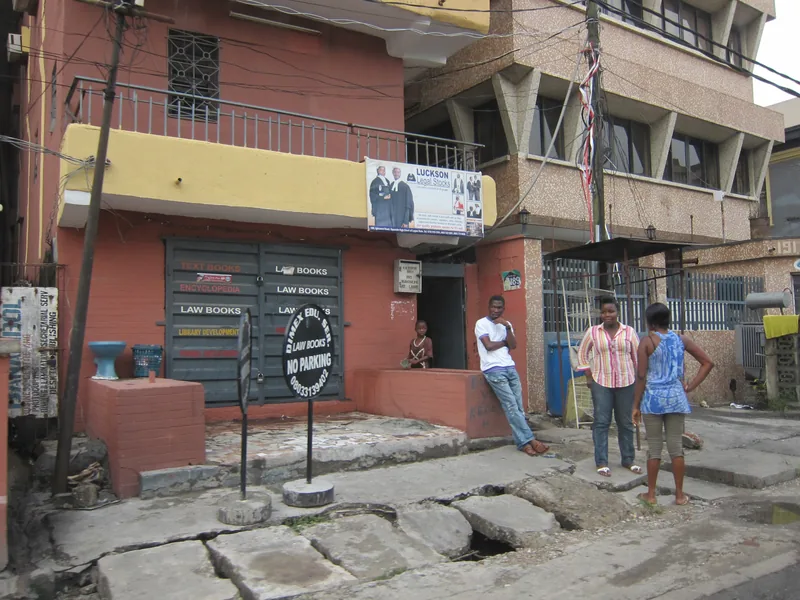
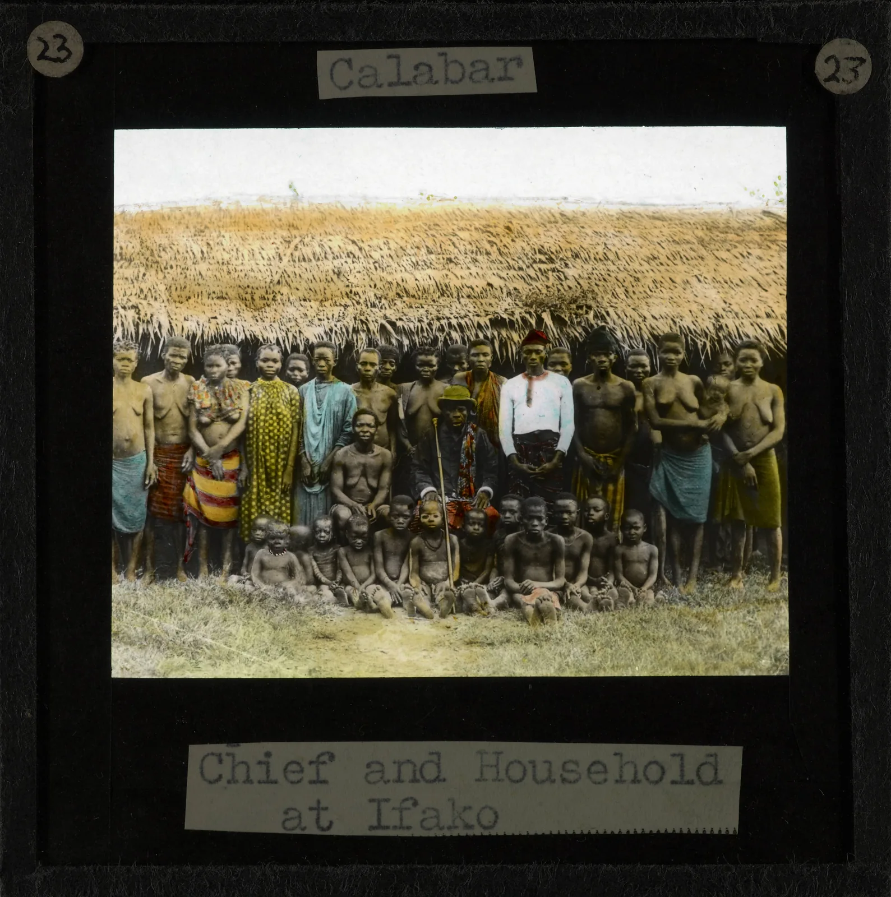

Photography
The Lens of Memory
From studio portraits to street moments, explore the images that tell our story.
An evolving archive of Nigerian photography, sound, style and visual culture.
01 / Lagos — photographic memory


Each collection has its own material, rhythm and point of view. Browse Nigerian photography, sound, textiles and design as distinct histories.
From studio portraits to street moments, explore the images that tell our story.

The rhythms, voices and movements that gave Nigeria its sound.

From traditional roots to modern style, discover the looks that moved us.

The objects, spaces and ideas that shaped how we live, work and create.
Browse Nigerian photographs from different eras. Open an image to learn its story, date and available source details.


Move the archive lens across two photographs from Lagos. These are separate places and dates, paired as a visual study—not a before-and-after.
Browse more photographs
Archival study · two distinct street photographs, captured four years apart.
Documenting the people, images, sounds and ideas that shaped Nigerian creative culture.
SPECIAL COLLECTION
NO. 001
PHOTOGRAPHY · SOUND · CULTURE

A late-19th-century group portrait at Ifako, Calabar. The photographer is unknown; the image preserves a specific record of a household and its time.
Read Story
Fela Anikulapo-Kuti developed Afrobeat through an encounter between West African musical traditions, jazz and funk. The Afrika Shrine became an important performance space closely associated with his music.
Read Story
Cloth and dress traditions differ across Nigeria's many communities. This collection includes aso-oke weaving, Yoruba wedding attire, Ibibio dress and Urhobo clothing.
Read Story
Collection objects include Ife sculpture, indigo dyeing, leatherwork, earthenware and Bida metalwork, each with its own material history.
Read StoryNo stories found for this collection yet.
Select a period to move through the collection. Dates distinguish historical periods from dated objects.

From Igbo Uli art and Yoruba adire dyeing to the early portrait studios documenting pre-colonial and colonial Nigeria, creativity was always present — long before independence.
Nigeria gained independence on 1 October 1960. Writers, musicians and artists — Achebe, Soyinka, highlife bandleaders — began defining what it meant to create freely on their own terms.

Fela Kuti's Afrobeat became a forceful musical voice. FESTAC '77 brought participants from across Africa and the diaspora to Lagos for a landmark arts and culture festival.

King Sunny Ade carried juju to international stages. Nigerian fashion absorbed global silhouettes while retaining bold local print and fabric. A decade of creative experimentation despite political turbulence.

The home-video film economy grew during the 1990s, helping Nigerian films reach wide audiences. The Abuja pottery shown here is a separate collection object photographed in 1960, not a photograph from this decade.
Afrobeats reached wider international audiences, with artists including Burna Boy, Wizkid and Tems carrying Nigerian sounds into new spaces. Film, fashion and design also found audiences well beyond the country.
ARCHIVE exists to preserve the stories behind Nigeria's creative identity. We bring photographs, music, fashion, design and cultural memory into one accessible digital space — connecting generations and giving the next generation a deeper understanding of where our creativity comes from.
Our history is not a footnote — it's the foundation.
Explore the Collections